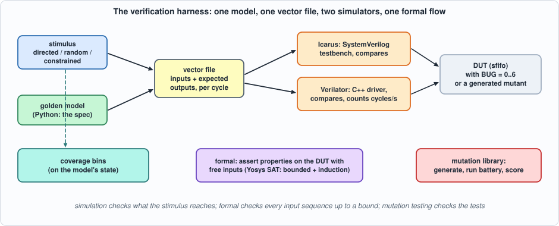
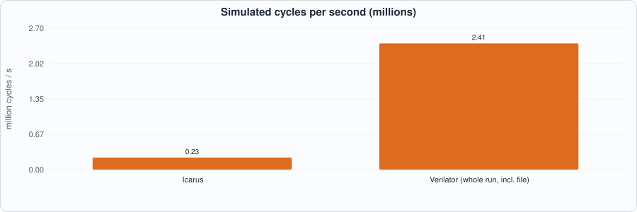
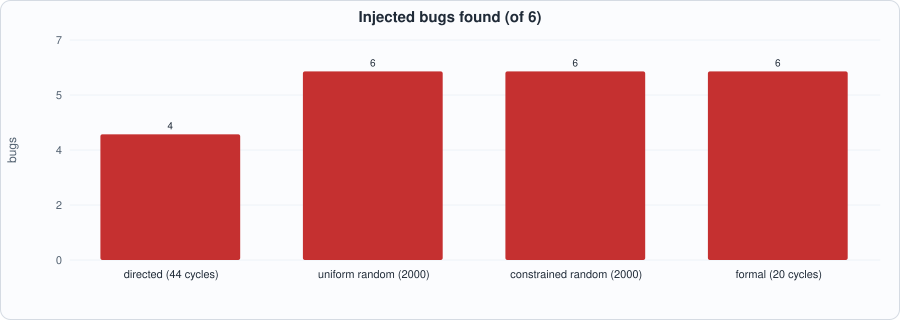
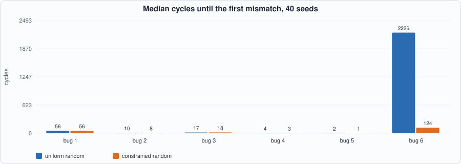
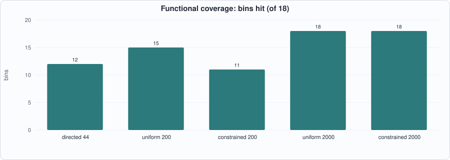

6. A Verification Harness: Vector Replay, Random and Constrained Stimulus, Coverage, Formal Properties, and Mutation Testing¶
About the kestrels in this picture
- Lesser kestrel (Falco naumanni) breeds in colonies in Mediterranean Europe and Central Asia and migrates to Africa for the winter. It feeds largely on large insects and nests in cavities in old buildings and cliffs.
- Nankeen kestrel (Falco cenchroides) is found across Australia and nearby islands. It hovers over open country and grassland, and often hunts along roadsides and fields.
The scene is imaginary and the birds are stylised drawings.
What you will see: the harness every later chapter uses, built once and then compared with itself: a Python golden model that is the specification; vector files replayed by an Icarus testbench and by a Verilator C++ driver (with the speed of each measured); directed, uniform random and constrained random stimulus with functional coverage counted on the model; formal properties checked by Yosys's SAT solver (a bounded search and an unbounded proof by induction); and a mutation-testing library that generates its own mutants. All of it is run on one small design with six injected bugs, so that each technique can be asked the same question: what do you find, how fast, and what do you miss?
What you need to know first: Chapters 1 to 5. A FIFO (first in, first out queue) is the design used; nothing else is assumed.
What this chapter builds: rtl/sfifo.sv (a synchronous FIFO with a library of six injected bugs), model/fifo_gold.py (model, stimulus and coverage), tb/sfifo_tb.sv (vector replay in SystemVerilog), tb/sfifo_drv.cpp (the same in C++ for Verilator), formal/sfifo_props.sv (assertions for Yosys), tools/mutlib.py (the mutation library), tools/ch06_run.py and tools/mut_ch06.py.
The design under test, and six bugs¶
sfifo holds up to DEPTH = 6 words of 8 bits (a depth that is not a power of two, so wrap-around is not free). Its specification is a queue: a write is accepted when it is not full, a read when it is not empty, rd_data is the oldest word whenever empty is 0, count is the number held. The parameter BUG selects the correct design (0) or one of six realistic mistakes:
| BUG | the mistake |
|---|---|
| 1 | a write when full is accepted and overwrites the oldest word |
| 2 | a read and a write in the same cycle with one word held: the count goes to 0 instead of staying at 1 |
| 3 | the write pointer wraps one word late, so after the first lap words are written outside the array |
| 4 | a read and a write in the same cycle when empty: the read is accepted too and the word just written is lost |
| 5 | a read when empty is accepted: the count underflows |
| 6 | a write of the data value 0xA5 when five words are held is lost (a data-dependent corner) |
// Chapter 6: a synchronous FIFO with first-word fall-through, DEPTH words of W bits (DEPTH need not be a power of two), and a library of injected bugs for comparing verification techniques.
// Specification: a write is accepted when the FIFO is not full, a read when it is not empty (a simultaneous read and write at full or at empty accepts only the one the state allows); rd_data is the oldest word whenever empty is 0; count is the number of words held.
// BUG = 0 is the correct design. BUG = 1..6 each inject one realistic mistake:
// 1 a write when full is accepted: it overwrites the oldest word (overflow not blocked)
// 2 a simultaneous read and write with exactly one word held: the count goes to 0 instead of staying at 1
// 3 the write pointer wraps one word late, so after the first lap words are written outside the array
// 4 a simultaneous read and write when empty: the read is accepted as well, so the word just written is lost
// 5 a read when empty is accepted: the count underflows
// 6 a write of the data value 0xA5 when DEPTH - 1 words are held is lost (a data-dependent corner)
module sfifo #(parameter int W = 8, parameter int DEPTH = 6, parameter int BUG = 0) (
input logic clk, input logic rst, input logic wr_en, input logic [W-1:0] wr_data, input logic rd_en,
output logic [W-1:0] rd_data, output logic full, output logic empty, output logic [$clog2(DEPTH+1)-1:0] count);
localparam int PW = $clog2(DEPTH), CW = $clog2(DEPTH + 1);
localparam logic [CW-1:0] DEP = CW'(DEPTH), DEPM1 = CW'(DEPTH - 1); // sized constants for the comparisons
localparam logic [PW:0] LAST = (PW + 1)'(DEPTH - 1), LATE = (PW + 1)'(DEPTH);
logic [W-1:0] mem [DEPTH]; logic [PW:0] wp, rp; // one extra pointer bit: BUG 3 needs to count past DEPTH - 1
logic do_wr, do_rd;
assign full = (count == DEP);
assign empty = (count == '0);
assign rd_data = mem[rp[PW-1:0]];
always_comb begin
do_wr = wr_en && !full; do_rd = rd_en && !empty;
if (BUG == 1) do_wr = wr_en;
if (BUG == 4 && wr_en && rd_en && empty) do_rd = 1'b1;
if (BUG == 5) do_rd = rd_en;
if (BUG == 6 && wr_en && wr_data == 8'hA5 && count == DEPM1) do_wr = 1'b0;
end
always_ff @(posedge clk) begin
if (rst) begin wp <= '0; rp <= '0; count <= '0; end
else begin
if (do_wr) begin mem[wp[PW-1:0]] <= wr_data; wp <= (wp == ((BUG == 3) ? LATE : LAST)) ? '0 : wp + 1'b1; end
if (do_rd) rp <= (rp == LAST) ? '0 : rp + 1'b1;
case ({do_wr, do_rd})
2'b10: if (count != DEP) count <= count + 1'b1;
2'b01: count <= count - 1'b1;
2'b11: if (BUG == 2 && count == CW'(1)) count <= '0;
default: ;
endcase
end
end
endmodule
The harness¶

Figure 6.1: one model, one vector file, two simulators, one formal flow, and a mutation library that tests the tests.The model is the specification, a deque (model/fifo_gold.py). It also generates the three kinds of stimulus and counts functional coverage, both independently of the RTL:
- directed: what an engineer writes by hand: a few words in and out, fill to full and drain to empty, a write when full, a read when empty, alternate writes and reads (44 cycles);
- uniform random: write and read each with probability 1/2, random data;
- constrained random: phases of 20 to 80 cycles with biased write/read probabilities (so the FIFO is driven to full and to empty and held near both), and data drawn half the time from a list of special values (
0x00,0xFF,0xA5,0x5A,0x01,0x80).
Coverage is a list of 18 bins evaluated on the model's state: each occupancy from 0 to 6; a write when full; a read when empty; a read and write at empty, at full, with one word and with three; two laps of the write pointer; a write of 0xA5 and of 0x00 when five words are held; full and empty for three cycles running.
#!/usr/bin/env python3
"""Chapter 6: the FIFO's golden model, the three kinds of stimulus (directed, uniform random, constrained random), and the functional coverage bins, all independent of the RTL.
The model is the specification: a deque. Per cycle, the outputs seen BEFORE the clock edge are (rd_data, full, empty, count); then the inputs are applied: a write is accepted if not full, a read if not empty."""
import random
from collections import deque
DEPTH = 6; W = 8
class Fifo:
def __init__(s, depth=DEPTH): s.d = deque(); s.depth = depth
def out(s): return (s.d[0] if s.d else 0, int(len(s.d) == s.depth), int(not s.d), len(s.d))
def step(s, wr, rd, data):
full, empty = len(s.d) == s.depth, not s.d
if rd and not empty: s.d.popleft()
if wr and not full: s.d.append(data)
def run(stim, depth=DEPTH):
m = Fifo(depth); res = []
for wr, rd, data in stim: res.append(m.out()); m.step(wr, rd, data)
return res
def write_vectors(path, stim, res):
"""One line per cycle: wr rd data(2 hex) | rd_data(2 hex) full empty count."""
with open(path, "w") as f:
for (wr, rd, data), (q, full, empty, cnt) in zip(stim, res): f.write(f"{wr}{rd}{data:02x}{q:02x}{full}{empty}{cnt}\n")
# ---- stimulus
def directed():
"""What an engineer writes by hand: a few words in and out, fill to full and drain to empty, alternate write and read."""
s = []
for k in range(3): s.append((1, 0, 0x10 + k))
for k in range(3): s.append((0, 1, 0))
for k in range(DEPTH): s.append((1, 0, 0x20 + k))
s.append((1, 0, 0x99)) # a write when full
for k in range(DEPTH): s.append((0, 1, 0))
s.append((0, 1, 0)) # a read when empty
for k in range(20): s.append((1, 1, 0x30 + k)) if k else s.append((1, 0, 0x30))
for k in range(4): s.append((0, 1, 0))
return s
def uniform(seed, n, pw=0.5, pr=0.5):
rng = random.Random(seed); return [(int(rng.random() < pw), int(rng.random() < pr), rng.getrandbits(W)) for _ in range(n)]
PHASES = [(0.9, 0.1), (0.1, 0.9), (0.5, 0.5), (0.7, 0.7), (0.95, 0.95), (0.6, 0.55), (0.3, 0.3)]
SPECIAL = [0x00, 0xFF, 0xA5, 0x5A, 0x01, 0x80]
def constrained(seed, n):
"""Constrained random: phases of 20 to 80 cycles with biased write/read probabilities (so the FIFO is driven to full and to empty and held near both), and data drawn half the time from a list of special values."""
rng = random.Random(seed); s = []
while len(s) < n:
pw, pr = rng.choice(PHASES)
for _ in range(rng.randint(20, 80)): s.append((int(rng.random() < pw), int(rng.random() < pr), rng.choice(SPECIAL) if rng.random() < 0.5 else rng.getrandbits(W)))
return s[:n]
# ---- functional coverage
BINS = [f"occupancy {k}" for k in range(DEPTH + 1)] + ["write when full", "read when empty", "read+write when empty", "read+write when full", "read+write with one word", "write wraps (2 laps)", "write of 0xA5 at depth-1", "write of 0x00 at depth-1", "full for 3 cycles running", "empty for 3 cycles running", "read+write with 3 words"]
def coverage(stim, depth=DEPTH):
"""Returns the set of bins hit by the stimulus, computed on the golden model's state."""
m = Fifo(depth); hit = set(); writes = 0; fullrun = emptyrun = 0
for wr, rd, data in stim:
n = len(m.d); full, empty = n == depth, n == 0; hit.add(f"occupancy {n}")
if wr and full: hit.add("write when full")
if rd and empty: hit.add("read when empty")
if wr and rd and empty: hit.add("read+write when empty")
if wr and rd and full: hit.add("read+write when full")
if wr and rd and n == 1: hit.add("read+write with one word")
if wr and rd and n == 3: hit.add("read+write with 3 words")
if wr and not full:
writes += 1
if writes >= 2 * depth: hit.add("write wraps (2 laps)")
if n == depth - 1 and data == 0xA5: hit.add("write of 0xA5 at depth-1")
if n == depth - 1 and data == 0x00: hit.add("write of 0x00 at depth-1")
fullrun = fullrun + 1 if full else 0; emptyrun = emptyrun + 1 if empty else 0
if fullrun >= 3: hit.add("full for 3 cycles running")
if emptyrun >= 3: hit.add("empty for 3 cycles running")
m.step(wr, rd, data)
return hit
if __name__ == "__main__":
for name, st in (("directed", directed()), ("uniform 2000", uniform(1, 2000)), ("constrained 2000", constrained(1, 2000))):
print(f"{name:18s} {len(st):5d} cycles, coverage {len(coverage(st))} of {len(BINS)} bins")
A vector file has one line per cycle: the inputs (wr, rd, data) and the model's outputs before the clock edge (rd_data, full, empty, count; rd_data is compared only when the FIFO is not empty). The same file feeds two drivers:
// Chapter 6 testbench for sfifo: vector replay. Each line of out/fifo_vec.hex has the inputs for one cycle (wr, rd, data) and the golden model's outputs (rd_data, full, empty, count) as they must be BEFORE the clock edge. rd_data is compared only when the FIFO is not empty. Defines: BUG, NC, VEC (the vector file, default out/fifo_vec.hex). Prints PASS or the first mismatches.
`timescale 1ns/1ps
`ifndef BUG
`define BUG 0
`endif
`ifndef VEC
`define VEC "out/fifo_vec.hex"
`endif
`ifndef NC
`define NC 2000
`endif
module sfifo_tb;
localparam int NC = `NC;
logic clk = 0, rst = 1, wr_en = 0, rd_en = 0; logic [7:0] wr_data = '0, rd_data; logic full, empty; logic [2:0] count; logic [39:0] vec [0:NC-1]; int errs = 0, k;
sfifo #(.W(8), .DEPTH(6), .BUG(`BUG)) dut (.clk(clk), .rst(rst), .wr_en(wr_en), .wr_data(wr_data), .rd_en(rd_en), .rd_data(rd_data), .full(full), .empty(empty), .count(count));
always #5 clk = ~clk;
initial begin
$readmemh(`VEC, vec);
repeat (2) @(negedge clk); rst = 0;
for (k = 0; k < NC; k++) begin
@(negedge clk); wr_en = vec[k][32]; rd_en = vec[k][28]; wr_data = vec[k][27:20]; #1;
// bit positions: wr 32, rd 28, data 27:20, rd_data 19:12, full 8, empty 4, count 2:0
if (full !== vec[k][8] || empty !== vec[k][4] || count !== vec[k][2:0] || (!vec[k][4] && rd_data !== vec[k][19:12])) begin
errs++; if (errs < 4) $display("MISMATCH cycle %0d: full %b/%b empty %b/%b count %0d/%0d rd_data %h/%h", k, full, vec[k][8], empty, vec[k][4], count, vec[k][2:0], rd_data, vec[k][19:12]);
end
end
if (errs == 0) $display("PASS: BUG=%0d, %0d cycles", `BUG, NC); else $display("FAIL: BUG=%0d, %0d mismatches", `BUG, errs);
$finish;
end
endmodule
// Chapter 6: a Verilator C++ driver for sfifo. Replays out/fifo_vec.hex (the same vector file the SystemVerilog testbench reads) through the compiled model and compares every cycle: the harness a real project uses when simulation speed matters. Usage: sfifo_drv <vector file> <cycles> [repeat]; prints PASS/FAIL and the simulated cycles per second.
#include <cstdio>
#include <cstdlib>
#include <chrono>
#include <vector>
#include "Vsfifo.h"
#include "verilated.h"
struct Line { int wr, rd, data, q, full, empty, count; };
int main(int argc, char** argv) {
Verilated::commandArgs(argc, argv);
if (argc < 3) { std::fprintf(stderr, "usage: %s vectors cycles [repeat]\n", argv[0]); return 2; }
int n = std::atoi(argv[2]); int rep = argc > 3 ? std::atoi(argv[3]) : 1;
std::vector<Line> v; FILE* f = std::fopen(argv[1], "r"); if (!f) { std::fprintf(stderr, "cannot open %s\n", argv[1]); return 2; }
char buf[64];
while ((int)v.size() < n && std::fgets(buf, sizeof buf, f)) {
Line l; int wr, rd, d, q, fu, em, c;
std::sscanf(buf, "%1x%1x%2x%2x%1x%1x%1x", &wr, &rd, &d, &q, &fu, &em, &c);
l = {wr, rd, d, q, fu, em, c}; v.push_back(l);
}
std::fclose(f); n = (int)v.size();
Vsfifo* top = new Vsfifo; long errs = 0, cycles = 0, first = -1;
auto t0 = std::chrono::steady_clock::now();
for (int r = 0; r < rep; r++) {
top->rst = 1; top->wr_en = 0; top->rd_en = 0; top->wr_data = 0;
for (int i = 0; i < 2; i++) { top->clk = 0; top->eval(); top->clk = 1; top->eval(); }
top->rst = 0;
for (int k = 0; k < n; k++) {
top->clk = 0; top->wr_en = v[k].wr; top->rd_en = v[k].rd; top->wr_data = v[k].data; top->eval(); // inputs applied, outputs settle (before the clock edge)
bool bad = top->full != v[k].full || top->empty != v[k].empty || top->count != v[k].count || (!v[k].empty && top->rd_data != v[k].q);
if (bad) { errs++; if (first < 0) first = k; }
top->clk = 1; top->eval(); cycles++;
}
}
double s = std::chrono::duration<double>(std::chrono::steady_clock::now() - t0).count();
if (errs == 0) std::printf("PASS: %d cycles x %d, %.2f million cycles per second\n", n, rep, cycles / s / 1e6);
else std::printf("FAIL: %ld mismatches, first at cycle %ld, %.2f million cycles per second\n", errs, first, cycles / s / 1e6);
delete top; return errs ? 1 : 0;
}
The C++ driver is what a project uses when simulation speed matters: Verilator turns the design into a C++ class, and the driver sets inputs, calls eval(), compares and counts.

Figure 6.2: the same million-cycle vector file in the two simulators.Formal properties¶
Simulation checks the inputs the stimulus reaches. Formal verification gives a solver the design and a property and asks for any input sequence that breaks it. Yosys's sat command does two kinds of search: bounded model checking (is there a violation within N cycles of reset?) and induction (if the property holds for k cycles in a row from any state, does it hold in the next? If so, it holds forever). The wrapper instantiates the FIFO, leaves the inputs free, and asserts what the specification says:
// Chapter 6: formal properties of sfifo, for Yosys's SAT engine. The wrapper instantiates the design, drives it with free (unconstrained) inputs, and asserts what the specification says. Yosys treats every undriven input as "any value, any cycle".
// Properties: (1) count never exceeds DEPTH, (2) full and empty agree with count, (3) a model of the occupancy kept in the wrapper agrees with count (so a write/read that changes the count the wrong way is caught), (4) a tagged word: pick any word (an $anyconst index K) and assert that the K-th word read is the K-th word written.
module sfifo_props #(parameter int BUG = 0, parameter int DEPTH = 6, parameter int TAG = 1) (input logic clk, input logic wr_en, input logic [7:0] wr_data, input logic rd_en);
logic rst; logic [7:0] rd_data; logic full, empty; logic [2:0] count;
sfifo #(.W(8), .DEPTH(DEPTH), .BUG(BUG)) dut (.clk(clk), .rst(rst), .wr_en(wr_en), .wr_data(wr_data), .rd_en(rd_en), .rd_data(rd_data), .full(full), .empty(empty), .count(count));
logic started = 1'b0; logic [2:0] occ = 3'd0; // the wrapper's own occupancy model
logic [3:0] nw = 4'd0, nr = 4'd0; (* anyconst *) logic [3:0] k; logic [7:0] tag = 8'd0; logic tagged = 1'b0;
initial rst = 1'b1;
always @(posedge clk) begin
rst <= 1'b0; started <= 1'b1;
if (!rst) begin
if (wr_en && occ != DEPTH[2:0]) begin occ <= occ + 1'b1 - ((rd_en && occ != 0) ? 1'b1 : 1'b0); nw <= nw + 1'b1; if (nw == k) begin tag <= wr_data; tagged <= 1'b1; end end
else if (rd_en && occ != 0) occ <= occ - 1'b1;
if (rd_en && occ != 0) nr <= nr + 1'b1;
end
end
always @(*) if (started && !rst) begin
assert (count <= DEPTH[2:0]);
assert (full == (count == DEPTH[2:0]));
assert (empty == (count == 3'd0));
assert (count == occ);
if (TAG != 0 && !empty && nr == k && tagged) assert (rd_data == tag);
end
endmodule
The properties: the count never exceeds DEPTH; full and empty agree with the count; the count equals the wrapper's own occupancy model (so any update of the count that differs from the specification fails); and a tagged word (an unconstrained index k: the k-th word written must be the k-th word read), which covers data order and integrity without a copy of the whole queue.
Running the comparison¶
#!/usr/bin/env python3
"""Chapter 6: the verification harness, comparing techniques on one design. (1) lint; (2) simulator speed: Icarus against a Verilator C++ driver on the same million-cycle vector file; (3) the six injected bugs against four techniques (directed, uniform random, constrained random, formal bounded model checking), and how many cycles random testing needs to find each; (4) functional coverage of each stimulus; (5) formal: the shortest counterexample for each bug, an unbounded proof of the counting properties by induction, and a bounded proof of the tagged-word property. Usage: ch06_run.py"""
import os, re, statistics, subprocess, sys, tempfile, time, concurrent.futures as cf
sys.path.insert(0, os.path.dirname(os.path.abspath(__file__))); sys.path.insert(0, os.path.join(os.path.dirname(os.path.abspath(__file__)), "..", "model"))
import flow, fifo_gold as g
R = flow.ROOT; V = lambda n: os.path.join(R, "out", n)
BUGS = {1: "write when full overwrites the oldest word", 2: "read+write with one word held: count goes to 0", 3: "write pointer wraps one word late", 4: "read+write when empty loses the word", 5: "read when empty underflows the count", 6: "a write of 0xA5 at depth-1 is lost"}
def sim_first_mismatch(stim, bug, tag):
"""Runs the Icarus testbench on a private vector file; returns the first cycle with a mismatch, or None."""
path = V(f"vec_{tag}.hex"); g.write_vectors(path, stim, g.run(stim))
rc, o = flow.sim_icarus(["rtl/sfifo.sv", "tb/sfifo_tb.sv"], "sfifo_tb", defines=(f"BUG={bug}", f"NC={len(stim)}", f'VEC="out/vec_{tag}.hex"'))
m = re.search(r"MISMATCH cycle (\d+)", o); os.remove(path)
return int(m.group(1)) if m else (None if "PASS" in o else -1)
def formal(bug, mode, depth, tag=1):
script = f"read_verilog -formal -sv rtl/sfifo.sv formal/sfifo_props.sv; chparam -set BUG {bug} -set TAG {tag} sfifo_props; hierarchy -top sfifo_props; proc; flatten; memory_map; opt_clean; " + ("sat -prove-asserts -set-init-zero -seq %d" % depth if mode == "bmc" else "sat -prove-asserts -set-init-zero -tempinduct -seq 1 -maxsteps 30")
t = time.time(); o = subprocess.run(["yosys", "-p", script], cwd=R, capture_output=True, text=True, timeout=300).stdout
return ("proved" if "no model found: SUCCESS" in o or "Induction step proven: SUCCESS" in o else "FAILS"), time.time() - t
if __name__ == "__main__":
print("== 1. lint gate")
p = subprocess.run(["verilator", "--lint-only", "-Wall", "--top-module", "sfifo", "rtl/sfifo.sv"], cwd=R, capture_output=True, text=True); w = [l for l in (p.stdout + p.stderr).splitlines() if l.startswith("%Warning")]
y = subprocess.run(["yosys", "-p", "read_verilog -sv rtl/sfifo.sv; hierarchy -top sfifo; proc; opt_clean; check"], cwd=R, capture_output=True, text=True).stdout
print(f" sfifo Verilator warnings: {len(w)} Yosys check problems: {len([l for l in y.splitlines() if 'Found and reported' in l and ' 0 problems' not in l])}")
print("\n== 2. simulator speed on the same vector file (1,000,000 cycles of constrained-random stimulus; run time only, compile time excluded)")
big = g.constrained(7, 1000000); g.write_vectors(V("fifo_vec_big.hex"), big, g.run(big)); d = tempfile.mkdtemp(prefix="ico6_"); exe = os.path.join(d, "sim")
subprocess.run(["iverilog", "-g2012", "-s", "sfifo_tb", "-o", exe, "-DNC=1000000", '-DVEC="out/fifo_vec_big.hex"', "rtl/sfifo.sv", "tb/sfifo_tb.sv"], cwd=R, check=True)
t = time.time(); o = subprocess.run(["vvp", "-n", exe], cwd=R, capture_output=True, text=True).stdout; ti = time.time() - t
vd = tempfile.mkdtemp(prefix="vlt6_"); subprocess.run(["verilator", "--cc", "--exe", "--build", "-O3", "-Wno-fatal", "-Wno-lint", "--top-module", "sfifo", "-Mdir", vd, "-CFLAGS", "-O2", os.path.join(R, "rtl/sfifo.sv"), os.path.join(R, "tb/sfifo_drv.cpp"), "-o", "drv"], capture_output=True)
t = time.time(); ov = subprocess.run([os.path.join(vd, "drv"), V("fifo_vec_big.hex"), "1000000", "1"], capture_output=True, text=True).stdout; tv = time.time() - t
print(f" Icarus (SystemVerilog testbench): {o.strip().splitlines()[0][:48]:48s} {1e6 / ti / 1e6:6.2f} million cycles per second")
print(f" Verilator (C++ driver): {ov.strip()[:48]:48s} {1e6 / tv / 1e6:6.2f} million cycles per second (includes reading the file)")
print(f" ratio: {ti / tv:.0f} x faster in Verilator")
os.remove(V("fifo_vec_big.hex"))
print("\n== 3. the six injected bugs against four techniques ('found' = a mismatch, or a counterexample, or a failed assertion)")
N = 2000; direct = g.directed(); uni = g.uniform(1, N); con = g.constrained(1, N)
print(f" {'bug':3s} {'what':48s} {'directed ' + str(len(direct)):>12s} {'uniform ' + str(N):>12s} {'constrained ' + str(N):>16s} {'formal (20 cycles)':>20s}")
rows = {}
for b in BUGS:
r = [sim_first_mismatch(direct, b, f"d{b}"), sim_first_mismatch(uni, b, f"u{b}"), sim_first_mismatch(con, b, f"c{b}")]; fr, ft = formal(b, "bmc", 20)
cell = lambda x: "missed" if x is None else f"at cycle {x}"
rows[b] = r; print(f" {b:3d} {BUGS[b]:48s} {cell(r[0]):>12s} {cell(r[1]):>12s} {cell(r[2]):>16s} {('found' if fr == 'FAILS' else 'missed'):>14s} {ft:4.1f}s")
print("\n how many cycles until the first mismatch, over 40 seeds (stimulus cut off at 20,000 cycles; 'not found' counts 20,000):")
print(f" {'bug':3s} {'uniform: median':>16s} {'worst':>8s} {'not found':>10s} | {'constrained: median':>20s} {'worst':>8s} {'not found':>10s}")
def trial(a): b, kind, seed = a; st = (g.uniform if kind == "u" else g.constrained)(seed, 20000); return (b, kind), sim_first_mismatch(st, b, f"s{b}{kind}{seed}")
with cf.ThreadPoolExecutor(4) as ex: res = list(ex.map(trial, [(b, k, s) for b in BUGS for k in "uc" for s in range(40)]))
agg = {}
for key, v in res: agg.setdefault(key, []).append(v)
for b in BUGS:
cells = []
for k in "uc":
vals = agg[(b, k)]; nf = sum(1 for x in vals if x is None); nums = [20000 if x is None else x for x in vals]; cells += [statistics.median(nums), max(nums), nf]
print(f" {b:3d} {cells[0]:16.0f} {cells[1]:8d} {cells[2]:10d} | {cells[3]:20.0f} {cells[4]:8d} {cells[5]:10d}")
print("\n== 4. functional coverage: bins hit on the golden model's state (%d bins)" % len(g.BINS))
print(f" {'stimulus':26s} {'bins hit':>9s} bins missed")
for name, st in (("directed (44 cycles)", direct), ("uniform 200 cycles", g.uniform(1, 200)), ("constrained 200 cycles", g.constrained(1, 200)), ("uniform 2000 cycles", uni), ("constrained 2000 cycles", con)):
h = g.coverage(st); miss = [b for b in g.BINS if b not in h]; print(f" {name:26s} {len(h):4d} of {len(g.BINS)} {', '.join(miss) if miss else '-'}")
print("\n== 5. formal (Yosys SAT): shortest counterexample, unbounded proof by induction, bounded proof of the tagged word")
print(f" {'bug':3s} {'shortest counterexample (cycles)':>34s}")
for b in BUGS:
for dpt in range(1, 41):
if formal(b, "bmc", dpt)[0] == "FAILS": break
else: dpt = None
print(f" {b:3d} {('none within 40' if dpt is None else str(dpt)):>34s}")
r, t = formal(0, "induction", 0, tag=0); print(f" correct design, count/full/empty properties, induction (unbounded): {r} in {t:.2f} s")
for b in BUGS:
r, t = formal(b, "induction", 0, tag=0); print(f" bug {b}: induction on the same properties: {r}")
r, t = formal(0, "bmc", 20); print(f" correct design, all properties including the tagged word, 20 cycles from reset: {r} in {t:.1f} s")
To compile and run: python3 tools/ch06_run.py (several minutes; most of it the 40-seed study of Section 3 and the 20-cycle proof at the end of Section 5). Recorded output:
== 1. lint gate
sfifo Verilator warnings: 0 Yosys check problems: 0
== 2. simulator speed on the same vector file (1,000,000 cycles of constrained-random stimulus; run time only, compile time excluded)
Icarus (SystemVerilog testbench): PASS: BUG=0, 1000000 cycles 0.23 million cycles per second
Verilator (C++ driver): PASS: 1000000 cycles x 1, 15.68 million cycles p 2.41 million cycles per second (includes reading the file)
ratio: 11 x faster in Verilator
== 3. the six injected bugs against four techniques ('found' = a mismatch, or a counterexample, or a failed assertion)
bug what directed 44 uniform 2000 constrained 2000 formal (20 cycles)
1 write when full overwrites the oldest word at cycle 13 at cycle 52 at cycle 312 found 0.5s
2 read+write with one word held: count goes to 0 at cycle 22 at cycle 2 at cycle 60 found 0.5s
3 write pointer wraps one word late at cycle 16 at cycle 16 at cycle 60 found 0.5s
4 read+write when empty loses the word missed at cycle 8 at cycle 3 found 0.5s
5 read when empty underflows the count at cycle 20 at cycle 8 at cycle 1 found 0.4s
6 a write of 0xA5 at depth-1 is lost missed at cycle 955 at cycle 323 found 0.4s
how many cycles until the first mismatch, over 40 seeds (stimulus cut off at 20,000 cycles; 'not found' counts 20,000):
bug uniform: median worst not found | constrained: median worst not found
1 56 420 0 | 56 342 0
2 10 184 0 | 8 387 0
3 17 28 0 | 18 100 0
4 4 176 0 | 3 162 0
5 2 155 0 | 1 161 0
6 2226 9765 0 | 124 1332 0
== 4. functional coverage: bins hit on the golden model's state (18 bins)
stimulus bins hit bins missed
directed (44 cycles) 12 of 18 read+write when empty, read+write when full, write of 0xA5 at depth-1, write of 0x00 at depth-1, full for 3 cycles running, read+write with 3 words
uniform 200 cycles 15 of 18 write of 0xA5 at depth-1, write of 0x00 at depth-1, empty for 3 cycles running
constrained 200 cycles 11 of 18 occupancy 5, occupancy 6, write when full, read+write when full, write of 0xA5 at depth-1, write of 0x00 at depth-1, full for 3 cycles running
uniform 2000 cycles 18 of 18 -
constrained 2000 cycles 18 of 18 -
== 5. formal (Yosys SAT): shortest counterexample, unbounded proof by induction, bounded proof of the tagged word
bug shortest counterexample (cycles)
1 9
2 4
3 9
4 3
5 3
6 8
correct design, count/full/empty properties, induction (unbounded): proved in 0.04 s
bug 1: induction on the same properties: FAILS
bug 2: induction on the same properties: FAILS
bug 3: induction on the same properties: proved
bug 4: induction on the same properties: FAILS
bug 5: induction on the same properties: FAILS
bug 6: induction on the same properties: FAILS
correct design, all properties including the tagged word, 20 cycles from reset: proved in 77.6 s
Reading the output (measured).
- Simulator speed (Section 2). On the same million-cycle vector file Icarus runs at 0.23 million cycles per second. The Verilator C++ driver reports 15.7 million cycles per second in its own timing (the file already read), about 68 times faster; timed as a whole process including reading a million lines of text it is 2.4 million cycles per second, 11 times faster. Both numbers are real; the first is what the simulator does, the second is what a user waits for when the stimulus is a file. A driver that generates its stimulus itself would be closer to the first.
- Which technique finds which bug (Section 3, Figure 6.3). The directed test (44 cycles) finds 4 of the 6 bugs and misses bug 4 (read and write at empty) and bug 6 (the
0xA5corner): it never does a read and a write together at empty, and never writes0xA5at five words. Uniform random (2,000 cycles) finds all six, bug 6 at cycle 955. Constrained random finds all six, bug 6 at cycle 323. Formal finds all six in 0.4 to 0.5 seconds each, with a counterexample. - How long random testing takes (Section 3, 40 seeds, Figure 6.4). The medians are short for five bugs (1 to 56 cycles for either kind of random stimulus), but bug 6 takes a median of 2,226 cycles with uniform random stimulus and a worst case of 9,765, against a median of 124 and a worst case of 1,332 with constrained random. The special data values are what helps. For bugs 1 to 5 the constrained stimulus is not better, and for bug 1 its worst case (342 cycles) is about as bad as uniform's (420). Biasing helps only where the bug has a data-dependent condition and the list of special values contains the trigger.
- Coverage (Section 4, Figure 6.5). The directed test hits 12 of 18 bins; uniform 200 cycles hits 15; constrained 200 cycles hits only 11, because a phase that holds the FIFO near empty for 80 cycles spends the budget there; with 2,000 cycles both reach 18 of 18. Constrained random is not a better coverage generator at every length: its bias pays off on corners that uniform random rarely combines, and it costs on a design this small.
- Formal (Section 5). The shortest counterexample for each bug is 3 to 9 cycles (bug 4 and 5: 3; bug 2: 4; bug 6: 8; bugs 1 and 3: 9). The three counting properties are proved for every cycle by induction in 0.04 seconds for the correct design (no bound). The same induction fails for bugs 1, 2, 4, 5 and 6 and proves bug 3: bug 3 corrupts where data is stored, which the counting properties do not mention. A proof is only as good as its properties; the tagged-word property is what covers bug 3, and it is checked by bounded search only: 20 cycles from reset, proved in 77.6 seconds for the correct design. I also tried to prove the tagged-word property by induction and stopped it after more than three minutes without a result; an unbounded proof of data integrity needs strengthening invariants (Chapter 14), which this chapter does not build.

Figure 6.3: the injected bugs found by each technique within its budget.
Figure 6.4: cycles until the first mismatch, median of 40 seeds. Bug 6 (a data-dependent corner) is where constrained random pays.
Figure 6.5: functional coverage by stimulus and length.What this comparison does not claim
One design of about 20 lines, six bugs chosen by me, one seed set. The ranking is not a result about FIFOs in general; the method is: inject known bugs, run every technique on the same ones, and report what each missed. A bug a technique has never been shown to find is not a bug it can be trusted to find.
Mutation testing, with generated mutants¶
Chapters 1 to 5 used hand-written mutants. tools/mutlib.py generates them: it applies operator-replacement rules to every occurrence in the code of a bug-free copy of the design (== and != swapped, && and || swapped, + 1 and - 1, 1'b0 and 1'b1, '0 and '1, a negation removed, a boundary limit swapped for its neighbour, a guard term removed), skipping comments and declarations. A mutant is one source with one change, and the library scores a battery of checks against all of them:
#!/usr/bin/env python3
"""Chapter 6: a small mutation-testing library. Instead of a hand-written list of mutants (Chapters 1 to 5), it GENERATES mutants from the source by applying operator-replacement rules to every occurrence in the code, skipping comments and any line that matches `skip` (the injected-bug lines). A mutant is one source text with one change.
generate(text, skip) -> list of (line number, description, mutated text)
score(mutants, fn, workers) -> for each mutant the name of the first check that fails (a `battery`), or None if it survives
The operator set is deliberately plain: equality and inequality swapped, && and || swapped, + and - swapped (only in `+ 1'b1` / `- 1'b1` forms), 1'b0 and 1'b1 swapped, '0 and '1 swapped, negation removed on a signal, a boundary limit swapped for its neighbour (DEP/DEPM1, LAST/LATE), a guard term (`&& !full`, `&& !empty`, `count != DEP`) removed."""
import re, concurrent.futures as cf
RULES = [
(r"==", "!=", "== replaced by !="), (r"!=", "==", "!= replaced by =="), (r"&&", "||", "&& replaced by ||"), (r"\|\|", "&&", "|| replaced by &&"),
(r"\+ 1'b1", "- 1'b1", "+ 1 replaced by - 1"), (r"- 1'b1", "+ 1'b1", "- 1 replaced by + 1"),
(r"1'b0", "1'b1", "1'b0 replaced by 1'b1"), (r"1'b1", "1'b0", "1'b1 replaced by 1'b0"), (r"'0\b", "'1", "'0 replaced by '1"),
(r"!(?=[a-z])", "", "negation removed"),
(r" && !full", "", "term '&& !full' removed"), (r" && !empty", "", "term '&& !empty' removed"), (r"\bDEP\b", "DEPM1", "limit DEP replaced by DEPM1"), (r"\bDEPM1\b", "DEP", "limit DEPM1 replaced by DEP"),
(r"\bLAST\b", "LATE", "wrap point LAST replaced by LATE"), (r"if \(count != DEP\) ", "", "guard 'count != DEP' removed"),
]
def generate(text, skip=r"BUG|^\s*//|^module|^\s*localparam|^\s*logic"):
out = []; lines = text.split("\n")
for ln, line in enumerate(lines):
code = line.split("//")[0]
if re.search(skip, code) or not code.strip(): continue
for pat, rep, desc in RULES:
if rep is None: continue
for m in re.finditer(pat, code):
new = code[:m.start()] + rep + code[m.end():] + (("//" + line.split("//", 1)[1]) if "//" in line else "")
if new == line: continue
out.append((ln + 1, f"line {ln + 1}: {desc}: {code.strip()[:60]}", "\n".join(lines[:ln] + [new] + lines[ln + 1:])))
seen = set(); uniq = []
for ln, d, t in out:
if t not in seen: seen.add(t); uniq.append((ln, d, t))
return uniq
def score(mutants, fn, workers=4):
with cf.ThreadPoolExecutor(workers) as ex: return list(ex.map(lambda m: fn(m[2]), mutants))
tools/mut_ch06.py scores five cumulative levels (the directed test, 500 uniform, 500 constrained, 5,000 of each, formal bounded model checking for 12 cycles; 12 is above the longest counterexample found for the injected bugs, 9). A survivor of all five is checked for equivalence with the original by a SAT miter: a circuit that compares the outputs of the two designs and asks the solver for any input sequence that makes them differ.
#!/usr/bin/env python3
"""Chapter 6: mutation testing with the generated mutants of tools/mutlib.py, scored against five levels of verification, each cumulative: (1) the directed test, (2) 500 cycles of uniform random, (3) 500 cycles of constrained random, (4) 5,000 cycles of each random kind, (5) formal bounded model checking (12 cycles, all properties; the longest shortest-counterexample of the six injected bugs is 9 cycles). A mutant that survives all five is then checked for EQUIVALENCE with the original by a SAT miter (14 cycles from reset, outputs compared when the FIFO is not empty). Usage: mut_ch06.py"""
import os, re, shutil, subprocess, sys, tempfile, concurrent.futures as cf
sys.path.insert(0, os.path.dirname(os.path.abspath(__file__))); sys.path.insert(0, os.path.join(os.path.dirname(os.path.abspath(__file__)), "..", "model"))
import flow, hw, fifo_gold as g, mutlib
R = flow.ROOT
def clean(t):
t = re.sub(r"^\s*if \(BUG == \d.*\n", "", t, flags=re.M)
return t.replace("((BUG == 3) ? LATE : LAST)", "LAST").replace("2'b11: if (BUG == 2 && count == CW'(1)) count <= '0;", "2'b11: ;")
LEVELS = [("directed", g.directed()), ("uniform 500", g.uniform(11, 500)), ("constrained 500", g.constrained(11, 500)), ("uniform 5000", g.uniform(12, 5000)), ("constrained 5000", g.constrained(12, 5000))]
def sim_ok(d, stim, tag):
g.write_vectors(os.path.join(d, "out", f"vec_{tag}.hex"), stim, g.run(stim))
rc, o = hw.sim_icarus(["rtl/sfifo.sv", "tb/sfifo_tb.sv"], "sfifo_tb", root=d, defines=("BUG=0", f"NC={len(stim)}", f'VEC="out/vec_{tag}.hex"'))
return rc == 0 and "PASS" in o
def formal_ok(d):
s = f"read_verilog -formal -sv {d}/rtl/sfifo.sv {R}/formal/sfifo_props.sv; chparam -set BUG 0 sfifo_props; hierarchy -top sfifo_props; proc; flatten; memory_map; opt_clean; sat -seq 12 -prove-asserts -set-init-zero"
o = subprocess.run(["yosys", "-p", s], capture_output=True, text=True, timeout=300).stdout
return "no model found: SUCCESS" in o
WRAP = """module obs_a(input logic clk, input logic rst, input logic wr_en, input logic [7:0] wr_data, input logic rd_en, output logic [7:0] q, output logic full, output logic empty, output logic [2:0] count);
logic [7:0] rd; sfifo #(.W(8), .DEPTH(6), .BUG(0)) u (.clk(clk), .rst(rst), .wr_en(wr_en), .wr_data(wr_data), .rd_en(rd_en), .rd_data(rd), .full(full), .empty(empty), .count(count)); assign q = empty ? 8'd0 : rd; endmodule
module obs_b(input logic clk, input logic rst, input logic wr_en, input logic [7:0] wr_data, input logic rd_en, output logic [7:0] q, output logic full, output logic empty, output logic [2:0] count);
logic [7:0] rd; sfifo_m #(.W(8), .DEPTH(6), .BUG(0)) u (.clk(clk), .rst(rst), .wr_en(wr_en), .wr_data(wr_data), .rd_en(rd_en), .rd_data(rd), .full(full), .empty(empty), .count(count)); assign q = empty ? 8'd0 : rd; endmodule
"""
def equivalent(d, text):
open(os.path.join(d, "sfifo_m.sv"), "w").write(text.replace("module sfifo ", "module sfifo_m ")); open(os.path.join(d, "obs.sv"), "w").write(WRAP)
s = f"read_verilog -sv {R}/rtl/sfifo.sv {d}/sfifo_m.sv {d}/obs.sv; proc; flatten; memory_map; opt_clean; miter -equiv -flatten -make_assert obs_a obs_b m; hierarchy -top m; sat -seq 14 -set-at 1 in_rst 1 -prove-asserts -prove-skip 1 -set-init-zero"
o = subprocess.run(["yosys", "-p", s], capture_output=True, text=True, timeout=300).stdout
return "no model found: SUCCESS" in o
def one(m):
ln, desc, text = m; d = tempfile.mkdtemp(prefix="mut6_")
for sub in ("rtl", "tb", "out", "model"): shutil.copytree(os.path.join(R, sub), os.path.join(d, sub), ignore=shutil.ignore_patterns("*.json", "*_synth.log", "*.hex"))
open(os.path.join(d, "rtl", "sfifo.sv"), "w").write(text); killed = None
for name, st in LEVELS:
if not sim_ok(d, st, name.replace(" ", "")): killed = name; break
if killed is None and not formal_ok(d): killed = "formal (12 cycles)"
eq = None
if killed is None: eq = equivalent(d, text)
shutil.rmtree(d, ignore_errors=True); return desc, killed, eq
if __name__ == "__main__":
print("NOTE: this script deliberately breaks copies of the RTL. 'killed by' lines are EXPECTED: they show a technique notices the mistake.")
base = clean(open(os.path.join(R, "rtl", "sfifo.sv")).read()); muts = mutlib.generate(base, skip=r"^\s*//|^module|^\s*localparam|^\s*logic|^\s*output|^\s*input")
d0 = tempfile.mkdtemp(prefix="mut6b_")
for sub in ("rtl", "tb", "out", "model"): shutil.copytree(os.path.join(R, sub), os.path.join(d0, sub), ignore=shutil.ignore_patterns("*.json", "*_synth.log", "*.hex"))
open(os.path.join(d0, "rtl", "sfifo.sv"), "w").write(base); ok = all(sim_ok(d0, st, "b" + n.replace(" ", "")) for n, st in LEVELS) and formal_ok(d0); shutil.rmtree(d0, ignore_errors=True)
print(f"unmutated design (bug-free copy) passes all five levels: {ok}; generated mutants: {len(muts)}")
with cf.ThreadPoolExecutor(4) as ex: res = list(ex.map(one, muts))
print(f" {'mutant':84s} {'killed by'}")
for desc, k, eq in res: print(f" {desc[:84]:84s} {k if k else ('SURVIVES; proved equivalent for 14 cycles' if eq else 'SURVIVES; NOT equivalent: a gap')}")
print("\ncumulative kills (a mutant is counted at the first level that kills it):")
tot = len(res); cum = 0
for name in [n for n, _ in LEVELS] + ["formal (12 cycles)"]:
c = sum(1 for _, k, _ in res if k == name); cum += c; print(f" {name:20s} kills {c:3d} cumulative {cum:3d} of {tot} ({100 * cum / tot:.0f}%)")
eqs = sum(1 for _, k, e in res if k is None and e); gaps = sum(1 for _, k, e in res if k is None and not e)
print(f" survivors proved equivalent: {eqs}; survivors NOT equivalent (gaps in the tests): {gaps}")
killable = tot - eqs; print(f" mutation score over the non-equivalent mutants: {cum} of {killable} ({100 * cum / killable:.0f}%)")
sys.exit(0 if ok and gaps == 0 else 1)
To run: python3 tools/mut_ch06.py (about half a minute). Recorded output (the list is shown only for the mutants that did not die at the first level):
NOTE: this script deliberately breaks copies of the RTL. 'killed by' lines are EXPECTED: they show a technique notices the mistake.
unmutated design (bug-free copy) passes all five levels: True; generated mutants: 30
mutant killed by
line 18: == replaced by !=: assign full = (count == DEP); directed
line 18: limit DEP replaced by DEPM1: assign full = (count == DEP); directed
line 19: == replaced by !=: assign empty = (count == '0); directed
line 19: '0 replaced by '1: assign empty = (count == '0); directed
line 22: && replaced by ||: do_wr = wr_en && !full; do_rd = rd_en && !empty; directed
line 22: && replaced by ||: do_wr = wr_en && !full; do_rd = rd_en && !empty; directed
line 22: negation removed: do_wr = wr_en && !full; do_rd = rd_en && !empty; directed
line 22: negation removed: do_wr = wr_en && !full; do_rd = rd_en && !empty; directed
line 22: term '&& !full' removed: do_wr = wr_en && !full; do_rd = rd_en && !empty; directed
line 22: term '&& !empty' removed: do_wr = wr_en && !full; do_rd = rd_en && !empty; directed
line 25: '0 replaced by '1: if (rst) begin wp <= '0; rp <= '0; count <= '0; end directed
line 25: '0 replaced by '1: if (rst) begin wp <= '0; rp <= '0; count <= '0; end directed
line 25: '0 replaced by '1: if (rst) begin wp <= '0; rp <= '0; count <= '0; end directed
line 27: == replaced by !=: if (do_wr) begin mem[wp[PW-1:0]] <= wr_data; wp <= (wp = directed
line 27: + 1 replaced by - 1: if (do_wr) begin mem[wp[PW-1:0]] <= wr_data; wp <= (wp directed
line 27: 1'b1 replaced by 1'b0: if (do_wr) begin mem[wp[PW-1:0]] <= wr_data; wp <= ( directed
line 27: '0 replaced by '1: if (do_wr) begin mem[wp[PW-1:0]] <= wr_data; wp <= (wp = directed
line 27: wrap point LAST replaced by LATE: if (do_wr) begin mem[wp[PW-1:0]] <= wr_da directed
line 28: == replaced by !=: if (do_rd) rp <= (rp == LAST) ? '0 : rp + 1'b1; directed
line 28: + 1 replaced by - 1: if (do_rd) rp <= (rp == LAST) ? '0 : rp + 1'b1; directed
line 28: 1'b1 replaced by 1'b0: if (do_rd) rp <= (rp == LAST) ? '0 : rp + 1'b1; directed
line 28: '0 replaced by '1: if (do_rd) rp <= (rp == LAST) ? '0 : rp + 1'b1; directed
line 28: wrap point LAST replaced by LATE: if (do_rd) rp <= (rp == LAST) ? '0 : rp + directed
line 30: != replaced by ==: 2'b10: if (count != DEP) count <= count + 1'b1; directed
line 30: + 1 replaced by - 1: 2'b10: if (count != DEP) count <= count + 1'b1; directed
line 30: 1'b1 replaced by 1'b0: 2'b10: if (count != DEP) count <= count + 1'b1; directed
line 30: limit DEP replaced by DEPM1: 2'b10: if (count != DEP) count <= count + 1'b1 directed
line 30: guard 'count != DEP' removed: 2'b10: if (count != DEP) count <= count + 1'b SURVIVES; proved equivalent for 14 cycles
line 31: - 1 replaced by + 1: 2'b01: count <= count - 1'b1; directed
line 31: 1'b1 replaced by 1'b0: 2'b01: count <= count - 1'b1; directed
cumulative kills (a mutant is counted at the first level that kills it):
directed kills 29 cumulative 29 of 30 (97%)
uniform 500 kills 0 cumulative 29 of 30 (97%)
constrained 500 kills 0 cumulative 29 of 30 (97%)
uniform 5000 kills 0 cumulative 29 of 30 (97%)
constrained 5000 kills 0 cumulative 29 of 30 (97%)
formal (12 cycles) kills 0 cumulative 29 of 30 (97%)
survivors proved equivalent: 1; survivors NOT equivalent (gaps in the tests): 0
mutation score over the non-equivalent mutants: 29 of 29 (100%)
Reading it. 30 mutants were generated. The directed test alone kills 29 of them, and nothing is left for the random levels or the formal run to add. The one survivor (removing the guard count != DEP from the count update) is proved equivalent for 14 cycles from reset by the miter: the write is already blocked by !full in do_wr, so the guard is redundant. The equivalence is bounded: "no difference within 14 cycles" is a proof only up to that bound.
This is a result about mutation scores. A 100% score over generated mutants says the tests are good at killing the mutants the operators produce. Those mutants are easy (each breaks one line in an obvious way), and the same directed test that kills 29 of 30 of them misses two of the six injected bugs, the two a person would call subtle. Bug 4 is a missing combination; bug 6 depends on the data; no operator that swaps && for || makes either. The score should be read together with the injected-bug comparison above, not instead of it.
How the harness was checked¶
The harness had its own bugs, and each was caught by a sanity check built for the purpose:
- The first testbench read the vector file with the wrong bit positions, and every variant failed, including the correct design. That is why the first line of the mutation run asserts that the unmutated design passes every level.
- The equivalence miter first reported "not equivalent" for a design compared with itself. The cause was a Yosys detail (
hierarchy -topremoved the second design before the miter was built; the miter's reset input is namedin_rst). It was found by running the checker on two things whose answer is known: the same design twice (must be equivalent) and a deliberately different design (must not be). Any checker that cannot say "equal" and "different" correctly is not a checker. - A formal run of 25 cycles with the tagged-word property took more than four minutes; the cost grows steeply with the bound (3 s at 10 cycles, 28 s at 14, 39 s at 18, 78 s at 20, in the runs recorded for this chapter). The chapter uses 20 for the one long proof and 12 inside the mutation loop.
What this chapter established, and what it did not¶
Established, with the tests that show it: a harness in which one Python model drives a SystemVerilog testbench and a Verilator C++ driver from the same vector file (the C++ driver 11 to 68 times faster than Icarus, depending on how it is timed); a directed test finds 4 of 6 injected bugs, uniform and constrained random find all 6 (bug 6 in a median of 2,226 and 124 cycles), formal bounded model checking finds all 6 in 3 to 9 cycles; the counting properties proved for every cycle by induction in 0.04 s (and, as a property of the properties, not covering bug 3); the tagged-word property proved for 20 cycles from reset; 30 generated mutants, 29 killed by the directed test, one proved equivalent for 14 cycles.
Not established: an unbounded proof of data integrity (Chapter 14); that the technique ranking holds for any design other than this FIFO; that the generated mutant set is representative of real bugs (the comparison above suggests it is not); equivalence beyond 14 cycles; any measurement of the Verilator driver on a larger design; SymbiYosys (not installed here; Yosys's sat command is used directly).
Self-check questions¶
- Why is the golden model written independently of the RTL, and what would be lost if the testbench computed its own expected values from the RTL's signals?
- What does
rd_dataget compared against when the FIFO is empty, and why? - Why does a vector file make the Icarus and Verilator runs comparable?
- The driver reports 15.7 million cycles per second and the whole process 2.4 million. What accounts for the difference, and which number would you quote?
- Which two injected bugs did the directed test miss, and what would you add to it to catch them?
- Constrained random found bug 6 about eighteen times faster than uniform random but was no better on bugs 1 to 5. Why?
- Constrained random with 200 cycles covered fewer bins than uniform random with 200. Why?
- What does bounded model checking prove, and what does it say about cycle 21 when run to depth 20?
- The counting properties were proved by induction yet bug 3 passes them. Why, and what property catches it?
- What is a SAT miter, and why must it be tested on a design compared with itself and on a deliberately different design?
- 29 of 30 generated mutants died to the 44-cycle directed test. Does that mean the directed test is good? What does the injected-bug table say?
- Why was a survivor "proved equivalent for 14 cycles" and not simply "equivalent"?
Exercises¶
- A seventh bug. Add a bug to
sfifothat only occurs after the write pointer has wrapped twice and a read and write coincide at three words. Which techniques find it and how fast? Add the coverage bin that would have flagged the gap. - A self-checking driver. Make the C++ driver generate the constrained-random stimulus itself (a port of the Python generator) and compare against a C++ model; measure the speed.
- Strengthen the induction. Add an invariant to the formal wrapper that makes the tagged-word property inductive, or explain what state would be needed.
- A better mutation operator. Write an operator that produces bug 4 or bug 6 from the correct code (for example, "make a guard also true in the simultaneous case"). How many generated mutants does it add, and how many survive the directed test?
- Directed test, improved. Add the two missing cases to
directed()and rerun Section 3; what does the directed test now find, and what does that do to the coverage?